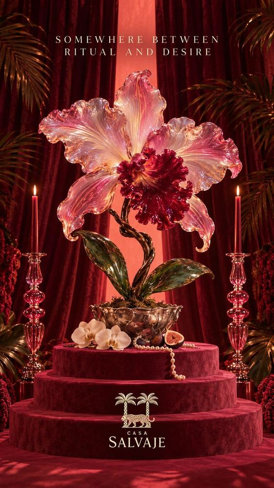

El oficio de la belleza: artesanías y diseño en Cartagena
Segunda guía para comprar en Cartagena: de Las Bóvedas a La Serrezuela, las manos que hacen bello a un país.
Read in English →
La primera guía siguió las tiendas a lo largo de un día. Esta sigue otra cosa: las manos. Las que levantaron la muralla piedra sobre piedra, las que tallaron una plaza de toros entera en madera, las que todavía tejen en La Guajira, trenzan caña flecha en el Sinú y estiran plata en Mompox hasta volverla encaje. Cartagena se puede comprar en tiendas de lujo, sí, pero lo que de verdad se lleva uno es el oficio de un país entero.
I · La muralla
Las Bóvedas, de cuartel a taller
En el extremo norte de la ciudad amurallada, entre el baluarte de Santa Catalina y el de Santa Clara, se alinean veintitrés bóvedas bajo una larga arcada amarilla. Se construyeron a finales del siglo XVIII, en el último gran esfuerzo por blindar la ciudad, con el sello del ingeniero Antonio de Arévalo: muros a prueba de explosivos para guardar pólvora, provisiones y tropas. Durante las guerras de independencia y buena parte del siglo XIX se volvieron cárcel, y se cuenta que con la marea alta el agua del mar se colaba hasta las celdas de los presos políticos.
Hoy cada bóveda es una tienda de artesanía. Es el lugar más turístico de esta guía, y conviene ir con ojo: entre los recuerdos en serie aparecen hamacas, mochilas y tallas que valen el viaje. La recompensa mayor es el lugar mismo, con la brisa del mar entrando por los arcos a la hora en que baja el sol.
Llévate una hamaca tejida o una mochila, después de mirar varias bóvedas.
Lo que de verdad se lleva uno de Cartagena es el oficio de un país entero.
II · La plaza de madera
La Serrezuela, donde rugía la plaza
Durante buena parte del siglo XX, Cartagena tuvo una plaza de toros hecha completamente de madera, con graderías, balcones y barandas talladas que parecían más un teatro que un coso. Cuando terminaron las corridas fue circo y escenario de festivales de música del Caribe; en 1995 la declararon Monumento Nacional, y aun así casi se pierde. Tras años de obras se restauró conservando su estructura de madera, y hoy guarda, bajo esas mismas graderías, uno de los centros comerciales más bellos del país.
Malva
La primera tienda por departamentos de lujo del país con acento latinoamericano abrió aquí, en La Serrezuela, en 2019. En un solo lugar reúne a los diseñadores que están definiendo la moda de la región, con nombres como Johanna Ortiz, Agua Bendita, Andrés Pajón y las joyas de Mercedes Salazar, junto a marcas nuevas que todavía es difícil encontrar en otra parte.
Desde Cartagena se extendió a Bogotá, Barranquilla, Lima y Ciudad de Panamá, pero la casa original sigue siendo esta.
Llévate una pieza de un diseñador colombiano que todavía no conozcas.
Le Collezioni
Durante años, Le Collezioni fue la casa del lujo internacional en Cartagena, en el antiguo Estanco del Tabaco de la ciudad amurallada. Hoy está en La Serrezuela, con marcas como Ferragamo, Tod's, Santoni, Paul Smith, Hackett y Furla.
Es la parada para lo que no se fabrica en Colombia: el mocasín italiano, la camisa inglesa, el bolso que acompaña por años.
Llévate unos mocasines para las noches de verano.
III · El Caribe en la piel
Dos mujeres que vistieron el calor
Hay una manera colombiana de vestirse para el trópico: telas que se mueven con la brisa, colores que no le temen al sol, piezas hechas a mano por talleres de mujeres. Estas dos marcas la llevaron lejos, y las dos tienen casa en el Centro.
Beatriz Camacho
Nació en Cartagena en 1966 y, aunque su taller está en Barranquilla, su primera boutique la abrió en su ciudad, en la Calle de la Inquisición. Cartagena aparece una y otra vez en su trabajo: vestidos amplios y vaporosos, mangas que flotan, una feminidad etérea pensada para caminar despacio bajo el sol.
La calle no podría ser más simbólica. A pocos pasos está el Palacio de la Inquisición, donde durante dos siglos se juzgó a quienes se atrevían a ser distintos; hoy en esa misma calle se vende libertad en forma de vestido.
Llévate un vestido largo y ligero para el atardecer en la muralla.
Agua Bendita
Catalina Álvarez y Mariana Hinestroza la fundaron en Medellín en 2003, cuando todavía eran estudiantes de diseño, cosiendo bikinis con retazos de tela. Hoy sus vestidos de baño se hacen a mano por cientos de artesanas colombianas y se venden en todo el mundo.
Su tienda en el Centro Histórico es una de sus casas insignia, y la marca tiene también una línea de lujo, Agua by Agua Bendita.
Llévate un vestido de baño hecho a mano para el día en las islas.
IV · Las manos de Colombia
Artesanías de Colombia
Si hay una sola tienda donde cabe el país entero, es esta. Artesanías de Colombia es la empresa nacional que trabaja con los artesanos de todas las regiones, y su tienda en el Centro Histórico reúne lo mejor de esos oficios con la garantía de que cada pieza es auténtica.
Ahí están las mochilas wayuu, que según la tradición de La Guajira enseñó a tejer Wale'kerü, una araña que tejía de noche fajas de mil diseños. Está el sombrero vueltiao, trenzado en caña flecha por los zenúes del Sinú y convertido en símbolo cultural de la nación. Y está la filigrana de Mompox, hilos de plata tan finos que las joyas parecen encaje. Cada objeto trae su región, su gente y su historia.
Llévate un sombrero vueltiao de muchas vueltas, o unos aretes de filigrana momposina.
Epílogo
La otra mitad de la guía
Esta es la segunda parte de un recorrido. La primera, La ciudad de las cosas bellas, sigue un día por las tiendas de diseño del Centro: St Dom, Johanna Ortiz, Silvia Tcherassi, Casa Chiqui y más. Entre una y otra, el mejor plan es sentarse a la mesa: un aperitivo en La Domenica, fuego en Kanibal, y la noche larga de SLVJ.
- Las Bóvedas Ver en el mapa
- Malva Sitio web · Instagram · Ver en el mapa
- Le Collezioni Sitio web · Instagram · Ver en el mapa
- Beatriz Camacho Sitio web · Instagram · Ver en el mapa
- Agua Bendita Sitio web · Instagram · Ver en el mapa
- Artesanías de Colombia Sitio web · Instagram · Ver en el mapa
Todas a una caminata de Casa Salvaje, Calle Santa Teresa #32-41.